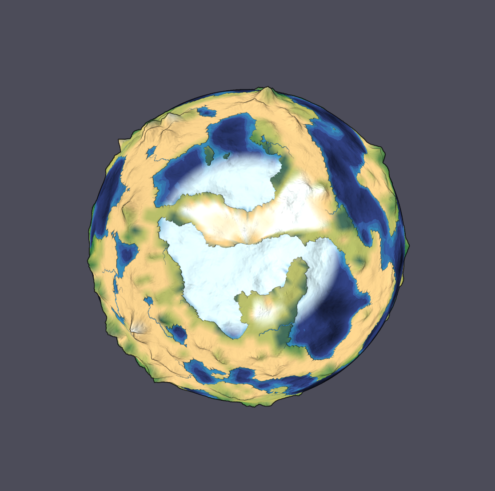
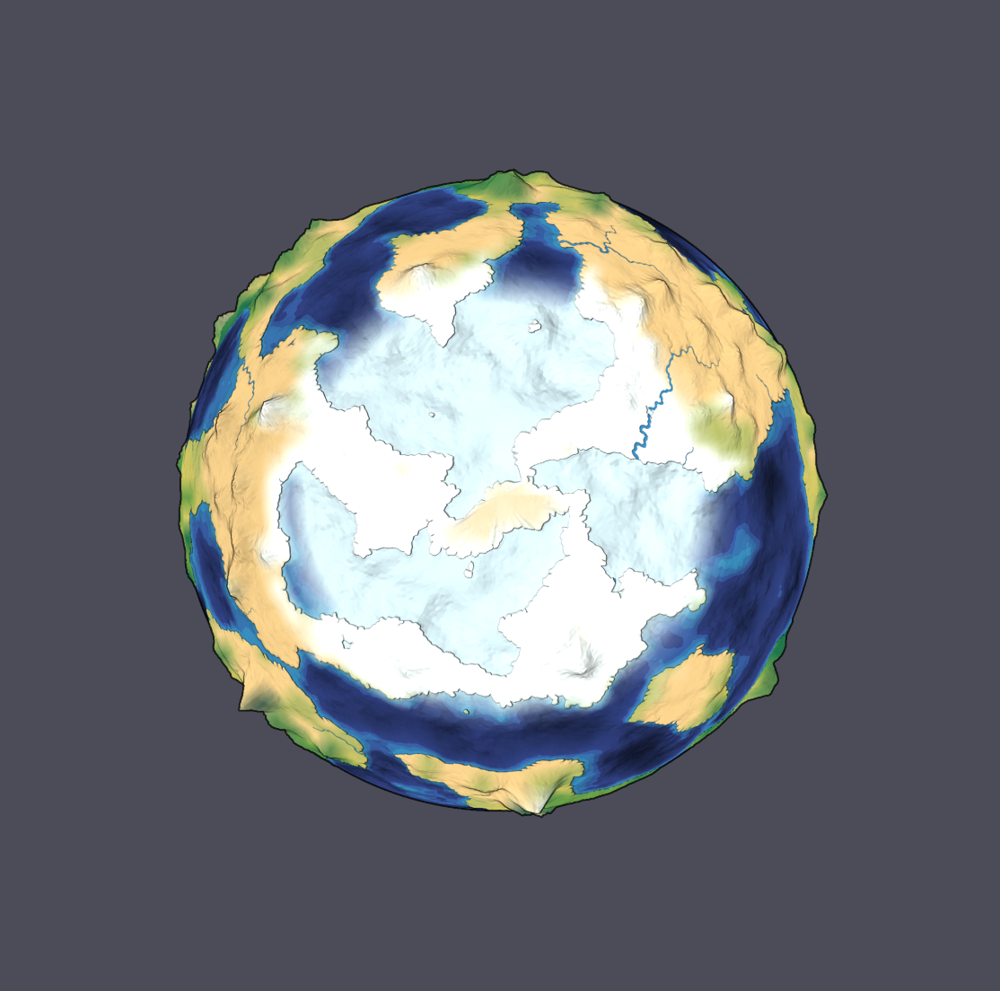

同一颗生成行星 · 相同视角比例 · 均未点击 Play · 模拟时间 0 天


浅白色海面为估计海冰。海冰按全年冷暖周期生成，运行时保留冻结与融化历史；不会因温度短暂高于冰点而立即消失。两侧陆海与地形不同，默认季节下的海冰边缘和陆地积雪允许不同。零倾角消除季节差异，不会消除地形差异。
这是潜在覆盖估计，不是实测南北极，也不是包含海流、盐度与热量反馈的完整海冰模型。计算方法与限制 · 验证记录